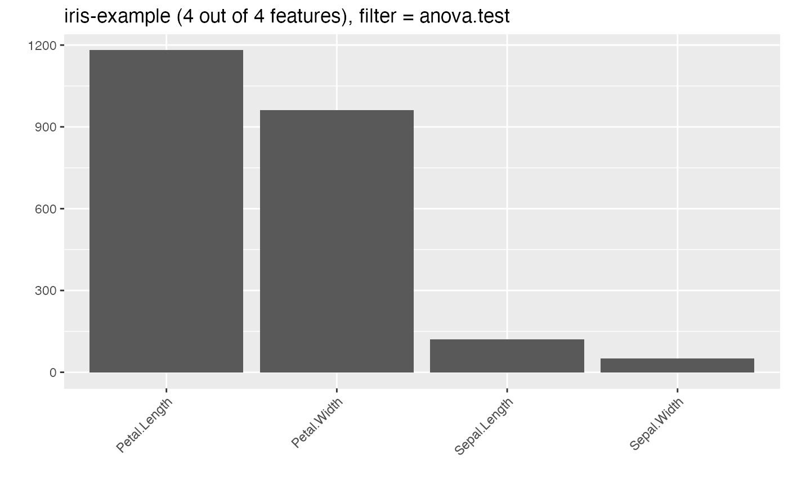

A lot of feature filter methods are already integrated in mlr and a complete list is given in the Appendix or can be obtained using listFilterMethods(). You can easily add another filter, be it a brand new one or a method which is already implemented in another package, via function makeFilter().
Filter objects
In mlr all filter methods are objects of class Filter (makeFilter()) and are registered in an environment called .FilterRegister (where listFilterMethods() looks them up to compile the list of available methods). To get to know their structure let’s have a closer look at the "rank.correlation" filter.
filters = as.list(mlr:::.FilterRegister) filters$rank.correlation ## Filter: 'rank.correlation' ## Packages: '' ## Supported tasks: regr ## Supported features: numerics str(filters$rank.correlation) ## List of 6 ## $ name : chr "rank.correlation" ## $ desc : chr "Spearman's correlation between feature and target" ## $ pkg : chr(0) ## $ supported.tasks : chr "regr" ## $ supported.features: chr "numerics" ## $ fun :function (task, nselect, ...) ## ..- attr(*, "srcref")= 'srcref' int [1:8] 325 9 328 3 9 3 2308 2311 ## .. ..- attr(*, "srcfile")=Classes 'srcfilealias', 'srcfile' <environment: 0x55db8ddf6dc0> ## - attr(*, "class")= chr "Filter" filters$rank.correlation$fun ## function(task, nselect, ...) { ## data = getTaskData(task, target.extra = TRUE) ## abs(cor(as.matrix(data$data), data$target, use = "pairwise.complete.obs", method = "spearman")[, 1L]) ## } ## <bytecode: 0x55db8dc9fe00> ## <environment: namespace:mlr>
The core element is $fun which calculates the feature importance. For the "rank.correlation" filter it just extracts the data and formula from the task and passes them on to the base::cor() function.
Additionally, each Filter (makeFilter()) object has a $name, which should be short and is for example used to annotate graphics (cp. plotFilterValues()), and a slightly more detailed description in slot $desc. If the filter method is implemented by another package its name is given in the $pkg member. Moreover, the supported task types and feature types are listed.
Writing a new filter method
You can integrate your own filter method using makeFilter(). This function generates a Filter (makeFilter()) object and also registers it in the .FilterRegister environment.
The arguments of makeFilter() correspond to the slot names of the Filter (makeFilter()) object above. Currently, feature filtering is only supported for supervised learning tasks and possible values for supported.tasks are "regr", "classif" and "surv". supported.features can be "numerics", "factors" and "ordered".
fun must be a function with at least the following formal arguments:
-
taskis amlrlearningTask(). -
nselectcorresponds to the argument ofgenerateFilterValuesData()of the same name and specifies the number of features for which to calculate importance scores. Some filter methods have the option to stop after a certain number of top-ranked features have been found in order to save time and ressources when the number of features is high. The majority of filter methods integrated inmlrdoesn’t support this and thusnselectis ignored in most cases. An exception is the minimum redundancy maximum relevance filter from packagemRMRe. -
...for additional arguments.
fun must return a named vector of feature importance values. By convention the most important features receive the highest scores.
If you are making use of the nselect option fun can either return a vector of nselect scores or a vector as long as the total numbers of features in the task filled with NAs for all features whose scores weren’t calculated.
When writing fun many of the getter functions for Task()s come in handy, particularly getTaskData(), getTaskFormula() and getTaskFeatureNames(). It’s worth having a closer look at getTaskData() which provides many options for formatting the data and recoding the target variable.
As a short demonstration we write a totally meaningless filter that determines the importance of features according to alphabetical order, i.e., giving highest scores to features with names that come first (decreasing = TRUE) or last (decreasing = FALSE) in the alphabet.
makeFilter( name = "nonsense.filter", desc = "Calculates scores according to alphabetical order of features", pkg = character(0), supported.tasks = c("classif", "regr", "surv"), supported.features = c("numerics", "factors", "ordered"), fun = function(task, nselect, decreasing = TRUE, ...) { feats = getTaskFeatureNames(task) imp = order(feats, decreasing = decreasing) names(imp) = feats imp } ) ## Filter: 'nonsense.filter' ## Packages: '' ## Supported tasks: classif,regr,surv ## Supported features: numerics,factors,ordered
The nonsense.filter is now registered in mlr and shown by listFilterMethods().
listFilterMethods()$id ## [1] anova.test auc ## [3] carscore FSelector_chi.squared ## [5] FSelector_gain.ratio FSelector_information.gain ## [7] FSelector_oneR FSelector_relief ## [9] FSelector_symmetrical.uncertainty FSelectorRcpp_gain.ratio ## [11] FSelectorRcpp_information.gain FSelectorRcpp_symmetrical.uncertainty ## [13] kruskal.test linear.correlation ## [15] mrmr nonsense.filter ## [17] party_cforest.importance permutation.importance ## [19] praznik_CMIM praznik_DISR ## [21] praznik_JMI praznik_JMIM ## [23] praznik_MIM praznik_MRMR ## [25] praznik_NJMIM randomForest_importance ## [27] randomForestSRC_importance randomForestSRC_var.select ## [29] ranger_impurity ranger_permutation ## [31] rank.correlation univariate.model.score ## [33] variance ## 48 Levels: anova.test auc carscore cforest.importance ... variance
You can use it like any other filter method already integrated in mlr (i.e., via the method argument of generateFilterValuesData() or the fw.method argument of makeFilterWrapper(); see also the page on feature selection.
d = generateFilterValuesData(iris.task, method = c("nonsense.filter", "anova.test")) d ## FilterValues: ## Task: iris-example ## name type filter value ## 1: Petal.Length numeric nonsense.filter 4.00000 ## 2: Petal.Width numeric nonsense.filter 3.00000 ## 3: Sepal.Length numeric nonsense.filter 2.00000 ## 4: Sepal.Width numeric nonsense.filter 1.00000 ## 5: Petal.Length numeric anova.test 1180.16118 ## 6: Petal.Width numeric anova.test 960.00715 ## 7: Sepal.Length numeric anova.test 119.26450 ## 8: Sepal.Width numeric anova.test 49.16004 plotFilterValues(d, filter = "anova.test")

iris.task.filtered = filterFeatures(iris.task, method = "nonsense.filter", abs = 2) iris.task.filtered ## Supervised task: iris-example ## Type: classif ## Target: Species ## Observations: 150 ## Features: ## numerics factors ordered functionals ## 2 0 0 0 ## Missings: FALSE ## Has weights: FALSE ## Has blocking: FALSE ## Has coordinates: FALSE ## Classes: 3 ## setosa versicolor virginica ## 50 50 50 ## Positive class: NA getTaskFeatureNames(iris.task.filtered) ## [1] "Petal.Length" "Petal.Width"
You might also want to have a look at the source code of the filter methods already integrated in mlr for some more complex and meaningful examples.